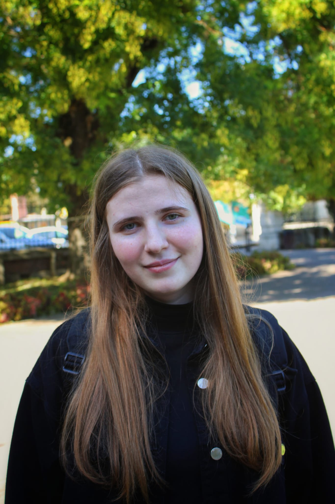

My Resume
IACOB MIRIAM

Profile
- 20 years
- Unmarried
- Romanian
Objective
- The application of technical and creative skills in a professional role in graphic design.
Education
2019-2023
Highscool - "Costache Negri" National College
- 2023-Present
Student - ACIEE,"Dunarea de Jos" University
Foreign Languages
Digital Skills
- Programming Languages learned: Java, C++, C, SQL
- Understanding basic notions about data and algorithms, AI
- Using Microsoft Office applications
- Digital collaboration
- Online communication
- Making digital content
Passions
Center of interest